#5 汇总页 #5 · 第一批 #26 fujikyu-8500
✅ 已推
✅ 已推 提交
d2aa8f9（car1，models-pipeline）MC 返工原因：编组错误
原始理由：其他：司机是这个贴图 按照目前这个形态 就是这个形状是没问题的 但是然后上下颠倒一下
根因：编组错误：实车 3 辆，模型 2 辆，缺 KuMoHa 8501（富士急端司机车，21.0 m、60 席、1 弓）。库里唯一的 fujikyu-8500 PDF 只有 2 张 net（8551＋8601），全库无其他 8500 图纸。
司机端返工（2026-11-28）：鼻端重绘改回图纸鼻件 (601,310,761,434) 旋转 180° 重裁，“2016”正读、风挡在上；边界白纸 858 px 边缘延展。
像素证据：car1 单文件推送；car2（MoHa 8601）根本没有司机端（中间车两端贯通端），未动；编组仍 2 辆（缺 KuMoHa 8501 无图）。
⚠️ 编组仍 2 辆子集（实车 3 辆），缺 KuMoHa 8501 图纸，等 MC 定夺。
图加载失败
'">修后——斜视角
🔍 司机端端面
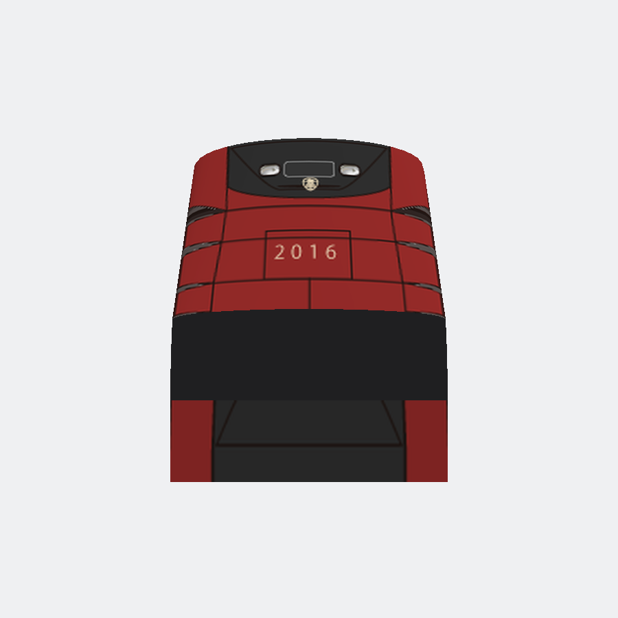
#26 汇总页 #26 · 第一批 #100 jr-east-183
✅ live 合规
✅ live 合规、无新 commit 末触
46a75b7（末触（183-A 风挡重贴），models-pipeline）MC 返工原因：其他：你这个司机是贴图绝对是错的 重新去图纸上面看 重新搞
原始理由：贴图颠倒
根因：纸模脸件本身没有风挡：脸顶是灰色屋顶设备带（两黑方块＋中央 X 盒），风挡是图纸左上单独的深色梯形件，建模时从未贴上脸；另绿灯块＋行先框整体偏低约 0.3 m，裙全白、无绿细带、无深灰裙、无车钩。
司机端返工（2026-11-28）：未返工——live 合规。R5 四项根因中裙板 3 项 live 已有；“绿灯块＋行先框偏低 0.3 m”是图纸原样 1:1，不修。
像素证据：独立重建与 live front 206,460/206,460 px 相同（NCC 1.0000）。
⚠️ 深灰裙＋车钩盒是否为图纸裁切本次未验证（只核了脸），不可称“图纸原图”。待 MC 定：玻璃顶角绿三角、灯块／行先框是否接受图纸原样。
图加载失败
'">现状图（live 合规，未返工）——斜视角
🔍 司机端端面（live）
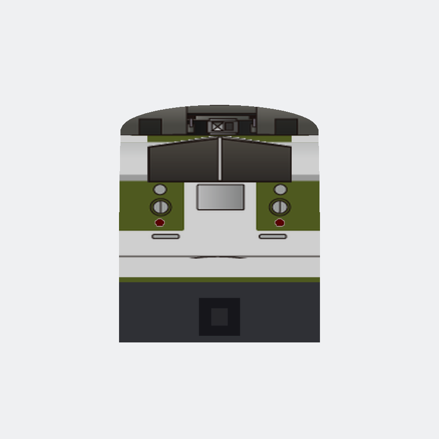
#27 汇总页 #27 · 第一批 #101 jr-east-251
✅ live 合规
✅ live 合规、无新 commit 末触
d05967e（末触（251-B4 胶耳），models-pipeline）MC 返工原因：其他：你这个司机端的这个贴图一看就不对的去图纸上面重新截重新搞结合现实中的图
原始理由：编组错误
根因：R4 只翻 UV：翻转后玻璃（贴图 rows 296–429）落在 v 0.69 之外、根本不被采样——脸面实际没有玻璃，只有深色弧＋3 灯；行先框落在脸底，实车在黑带上。
司机端返工（2026-11-28）：未返工——live 合规。行先框已在黑带内 y2.16–2.36 m。
像素证据：live front md5 与已验证的图纸重算逐字节相同（6 波段 NCC 全 1.00000）。
⚠️ 待 MC 定：是否接受分带重排比例（或授权按正射照片标定后微调三带下移 0.1–0.2 m）。
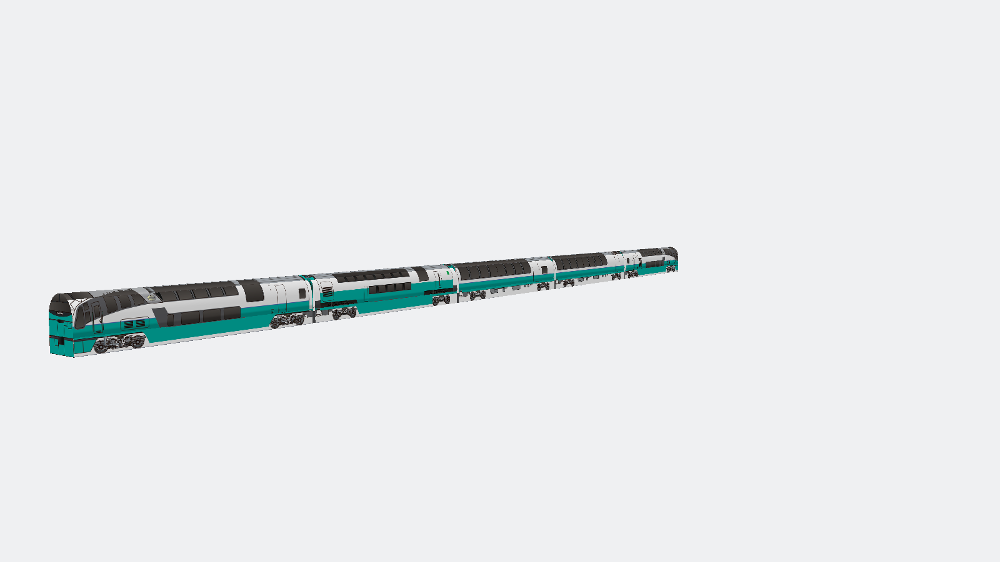
图加载失败现状图（live 合规，未返工）——斜视角
🔍 司机端端面（live）
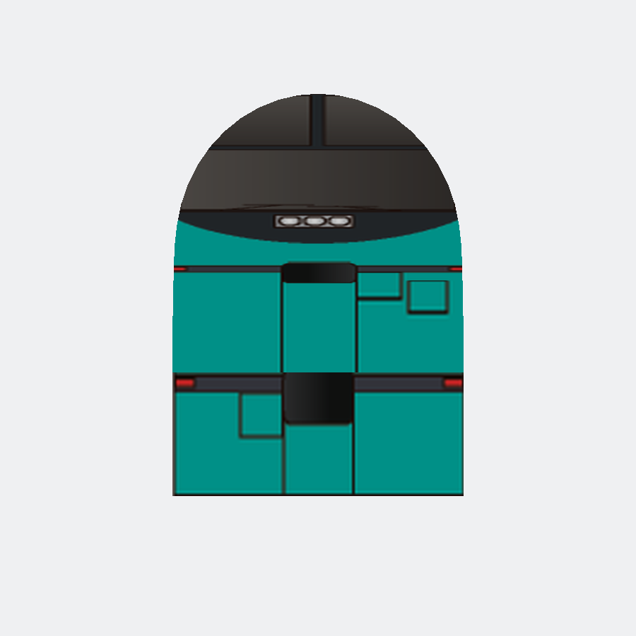
#30 汇总页 #30 · 第一批 #105 jr-east-485
✅ live 合规
✅ 已推 提交
1171f85、1010b48（满幅修复，models-pipeline）MC 返工原因：其他：你这个司机端的这个贴图一看就不对的去图纸上面重新截重新搞结合现实中的图
原始理由：贴图颠倒
根因：R4 深蓝风挡带＋斜雨刮、擦黄三角、行先框上画深灰 ▼：风挡颜色错（实车是浅色玻璃）、雨刮斜穿玻璃、行先框空白灰、无红灯板。
司机端返工（2026-11-28）：未返工——风挡阶段二已验证合规：风挡 43° 斜面放回脸上（图纸裁切 x262–371、y325–377，底缘 y2.93、顶缘 y3.48），脸整体下移 1.23 m 贴地，翻转保持、一个元素都没动。满幅修复：脸贴满左右、无填色边，拉伸率 D=1.217（21.7%，图纸件 156 px 的固有代价），圆灯略呈横椭圆。
像素证据：B-box 裙板按脸重贴、青绿带＋灰带一路贴地，水密 0/0/0；两页渲染已目检确认。
⚠️ 裙板不是纸白——纸白与脸贴地不可兼得（A 版纸白会挡掉脸近 40%）；若 MC 要纸白（改推 A 版）或暗灰，另派。
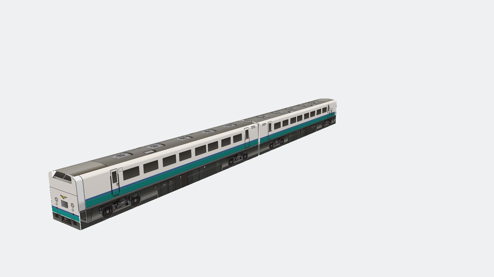
图加载失败现状图（live 合规，未返工）——斜视角
🔍 司机端端面（live）

#34 汇总页 #34 · 第一批 #113 jr-east-e253-1000
✅ 已推
✅ 已推 提交
50a7a5c（car1 D2 空调盒下沉；另 0f62147 car1 D1、7a2b9d4 car2，models-pipeline）MC 返工原因：其他：你这个司机端的这个贴图一看就不对的去图纸上面重新截重新搞结合现实中的图
原始理由：贴图颠倒
根因：R4 只裁切＋翻 JR 标志：行先框仍是大方块压玻璃、黑带过低、灰槽浮在红脸上、裙顶 X 带未动。
司机端返工（2026-11-28）：D1 鼻端坡度（脸顶 3.28→3.06 m）＋D2 空调盒（凸出 0.22 m）＋脸按修正比例重贴（黑带缩至 1.60×2.38 m）＋裙板车钩盒上移 0.40 m；另发现 car2 整辆在编组里装反，consist flip 纠正。
像素证据：3 commit 已推（0f62147、7a2b9d4、50a7a5c）；D1 原 0.90 m 带高方案已作废（带高实为 1.82 m，模型米 1.58 m）；鼻端顶实为 3.03 m、名义 3.06 m。
⚠️ 遗留：玻璃发黄未改（须 MC 明示授权）、car2 立体受电弓另派、car2 裙板高度未按照片重核。
图加载失败
'">修后——斜视角
🔍 司机端端面
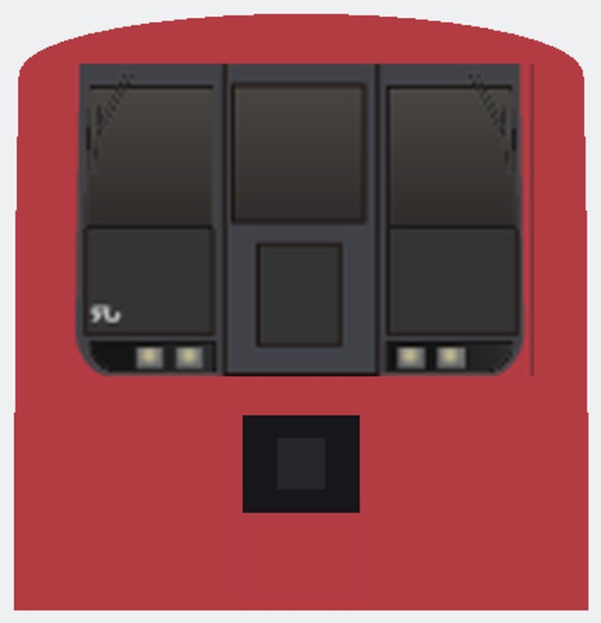
#44 汇总页 #44 · 第一批 #143 jr-hokkaido-kiha283
✅ 已推
✅ 已推 提交
16e7469（car3；另 45039ea car1，models-pipeline）MC 返工原因：其他：你这个司机端的这个贴图一看就不对整个删掉重新做 你能不能结合现实中的看一下呀 他
原始理由：其他：重做
根因：R4 只改中央带颜色：脸仍是平蓝墙（无风挡、无门、无灯）、头标牌横置 90°、两侧灰机械条未清。
司机端返工（2026-11-28）：脸换成图纸真正脸件（net x889–1020、y577–754，翻转一次）裁切；第五轮“图纸无正脸件、必须重画”是错的。
像素证据：风挡居顶、门居中、大雪两端正读、无白胶耳；脸横向 +13.7% 是图纸自身各向异性。
⚠️ 脸上无头标牌（牌在鼻侧件，实车亦然）；鼻锥仍平顶盖，圆弧鼻锥＋鼻侧头标牌恢复须 loft，另派等定。
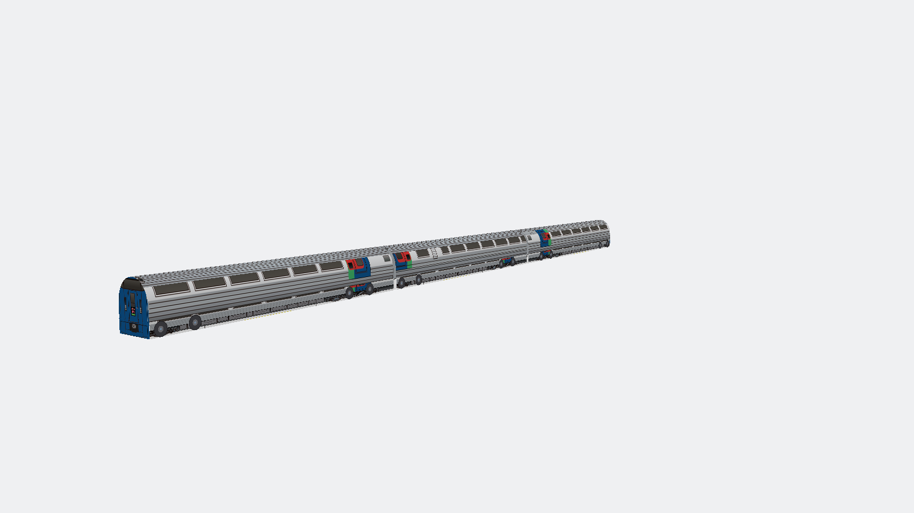
图加载失败修后——斜视角
🔍 司机端端面
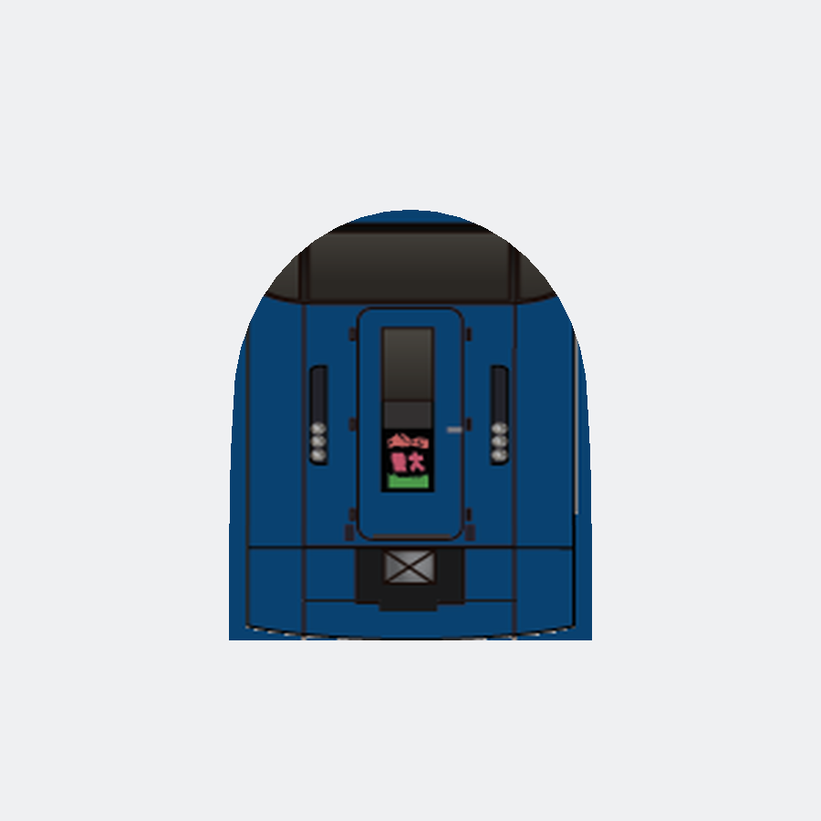
#46 汇总页 #46 · 第一批 #150 jr-kyusyu-783
⛔ 未返工
⛔ 未返工——已停下：楔形成立须动几何，由 783-windshield 轨道承接；无新 commit。
MC 返工原因：其他：你这个司机端的这个贴图一看就不对的去图纸上面重新截重新搞结合现实中的图
原始理由：其他：删了重做
根因：R4 拼贴脸两侧有纸模侧面粘贴耳（FACE_T 件侧缘整块框进贴图）；风挡玻璃下有一条约 15% 脸高的黑带（拼贴嫌疑）；底部中央大黑矩形（行先表示器）读起来像黑洞，实车前脸底部不是黑盒。
司机端返工（2026-11-28）：未返工——已停下：楔形成立，贴图重裁是错的修法，须动几何（49.7° 斜面风挡＋脸下移贴地，类比 485），由 783-windshield 轨道承接。
像素证据：风挡 49.7°（图纸侧件与竖直夹角 40.28°／40.29°，左右镜像对称）；live 端盖 z 纵深仅 0.013 m、竖直平面无斜面。live 脸 5 类缺陷实锤：重绘 flood-fill 74,057 px、填色立柱 37,800 px 平色、row 420 跳变 37→210、颜色拉长 tone 30.7 vs 53.1、拉图净各向异性 1.34。
⚠️ 裁切规格已交 783-windshield 调查组（玻璃源 300 dpi 页 1 x1280–1570、y770–~960，底缘弧形）。
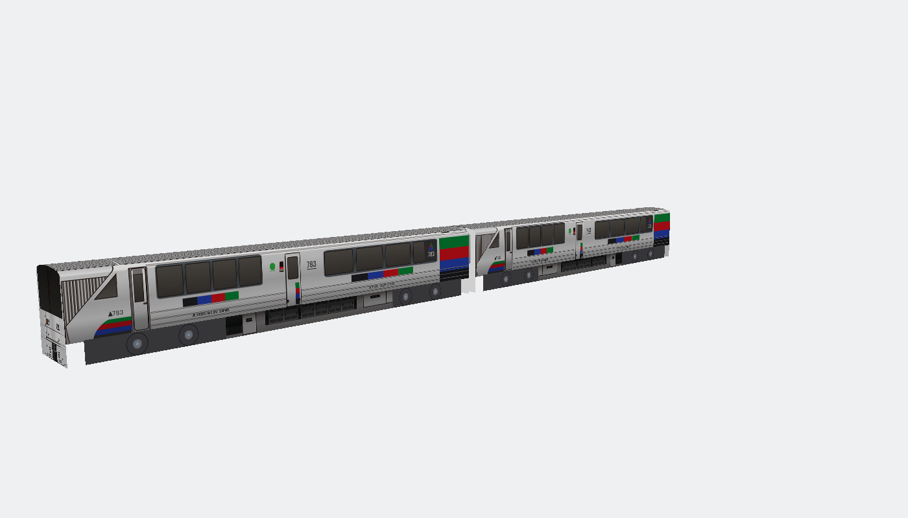
图加载失败现状图（未返工，live）——斜视角
🔍 司机端端面（live）
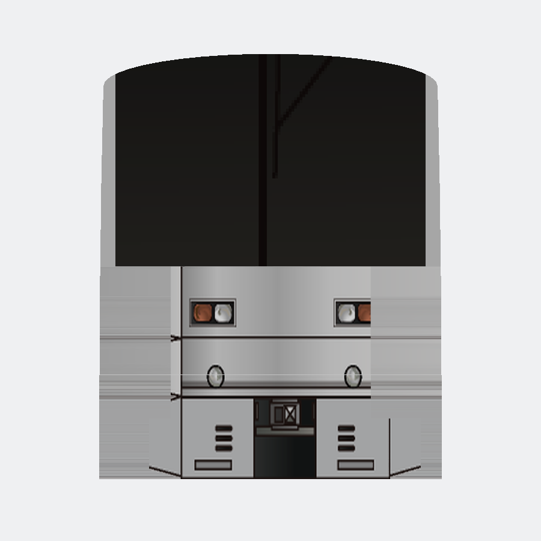
#51 汇总页 #51 · 第一批 #158 jr-kyusyu-bec819
✅ live 合规
✅ live 合规、无新 commit 末触
b8d7bc2（末触，models-pipeline）MC 返工原因：胶耳未清
原始理由：贴图颠倒
根因：live 确有耳（第四轮修法锚点错误导致）：右侧纯白梯形耳约 15% 宽＋裙板斜纹三角；R4 页图与 R4 修后源渲染 MD5 一致，MC 看到的就是修后模型——第四轮修得不彻底。
司机端返工（2026-11-28）：未返工——live 合规。脸中央区 NCC 0.709 是 R4 tone 加深＋放大所致，要素位置／形态与图纸一致，无重绘证据。
像素证据：live == R5 tex_fixed，0 像素差异；角区白像素 0/0、裙板白像素 0/0。
⚠️ 遗留：中部无设备（原始建模遗漏）未动。
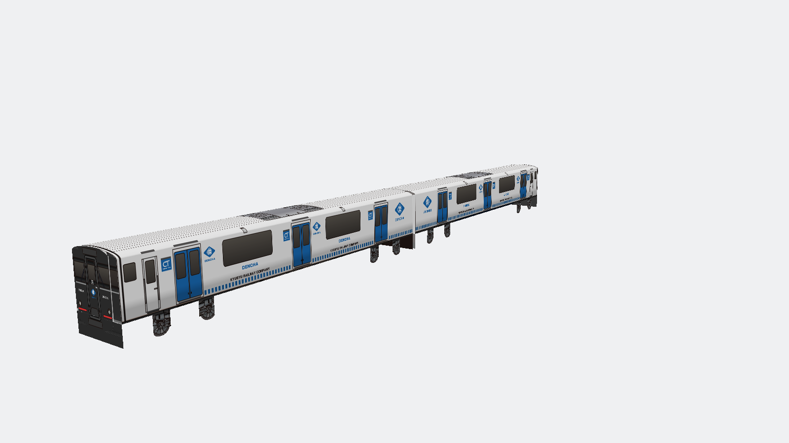
图加载失败现状图（live 合规，未返工）——斜视角
🔍 司机端端面（live）
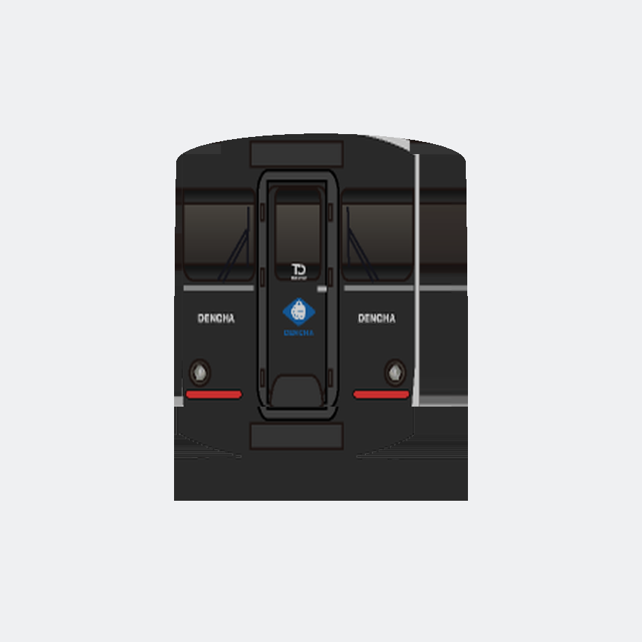
#53 汇总页 #53 · 第一批 #167 jr-kyusyu-kiha71
✅ 已推
✅ 已推 提交
1e37ca4（car1＋car4，models-pipeline）MC 返工原因：其他：你这个司机端的这个贴图一看就不对的去图纸上面重新截重新搞结合现实中的图
原始理由：编组错误
根因：司机面本身是对的（R4 rotCW 后全景风挡、金字、圆灯、金方块俱全）；错的是裙板：上面是一条脸面特征条（黑矩＋金框＋圆灯＋金矩），而不是实车下部（绿裙板＋中央黑联挂器口袋）。根因：司机室件是逆时针转 90° 画的，裙板源取成了脸的右侧条。
司机端返工（2026-11-28）：脸合规（独立重裁 rotCW，NCC 0.9945）；裙板左缘白带 1,438 px 逐行重填同行面板内 tone 中位。
像素证据：白像素 1,440 → 2；car1＋car4 同换（裙板贴图字节相同）。
⚠️ 遗留：金方块左右未改动（三方证据冲突）；中车 car2／car3 裙板白像素（贯通端）未动，司机端范围外。
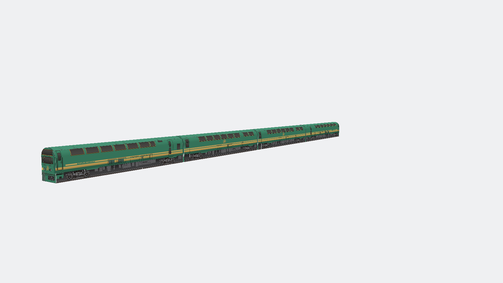
图加载失败修后——斜视角
🔍 司机端端面
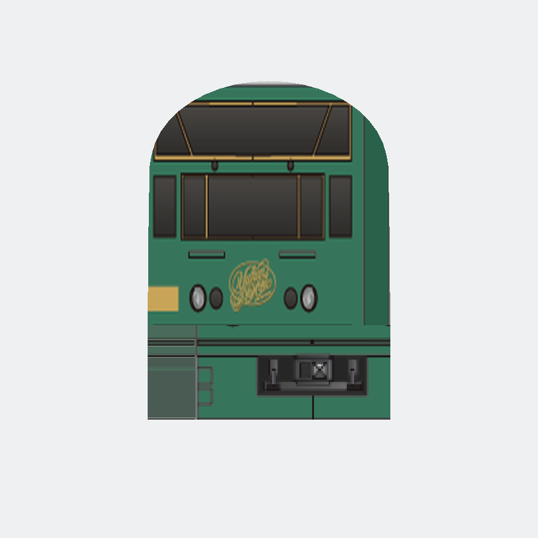
#58 汇总页 #58 · 第一批 #180 jr-shikoku-8000
✅ 已推
✅ 已推 提交
f190769（car1，models-pipeline）MC 返工原因：其他：你这个司机端的这个贴图一看就不对的去图纸上面重新截重新搞结合现实中的图
原始理由：其他：头型和贴图都有点问题
根因：只错脸部贴图，鼻锥几何不动：风挡玻璃是灰色（~100–190 渐变），不是黑色；玻璃下有一条黑带，实车玻璃下直接是银鼻锥；裙板有圆灯＋深色竖条，实车下鼻是素银＋联挂器凹口。
司机端返工（2026-11-28）：顶带 rows 0–29 过暗（tone ~70.7），用图纸屋顶前缘银灰重裁（源 PDF 页 1 x1150–1375、y965–995，均色 150.1/153.0/159.0），只改 rows 0–29。
像素证据：R6 修复验证属实（live == R6 fix，0 像素差异）；银带 rows 400–475 平色保留（图纸银 ~207、实车照片证实素银鼻锥）。
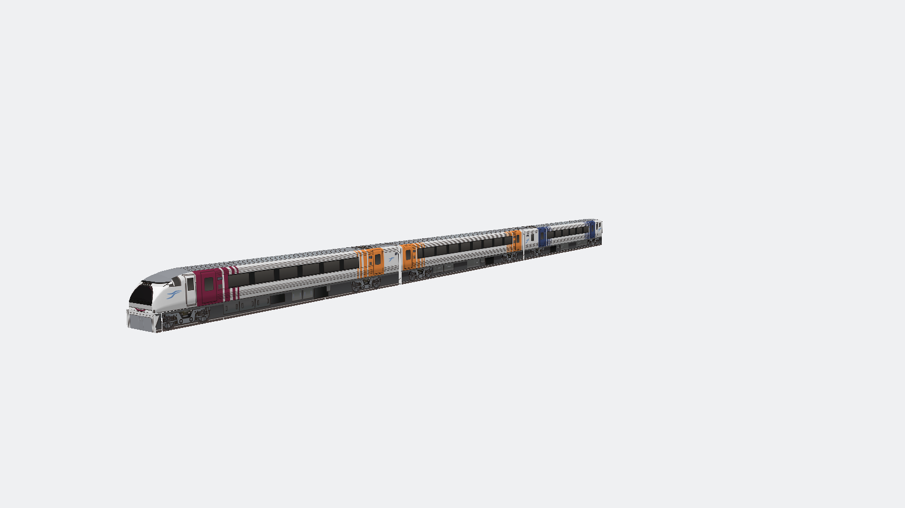
图加载失败修后——斜视角
🔍 司机端端面
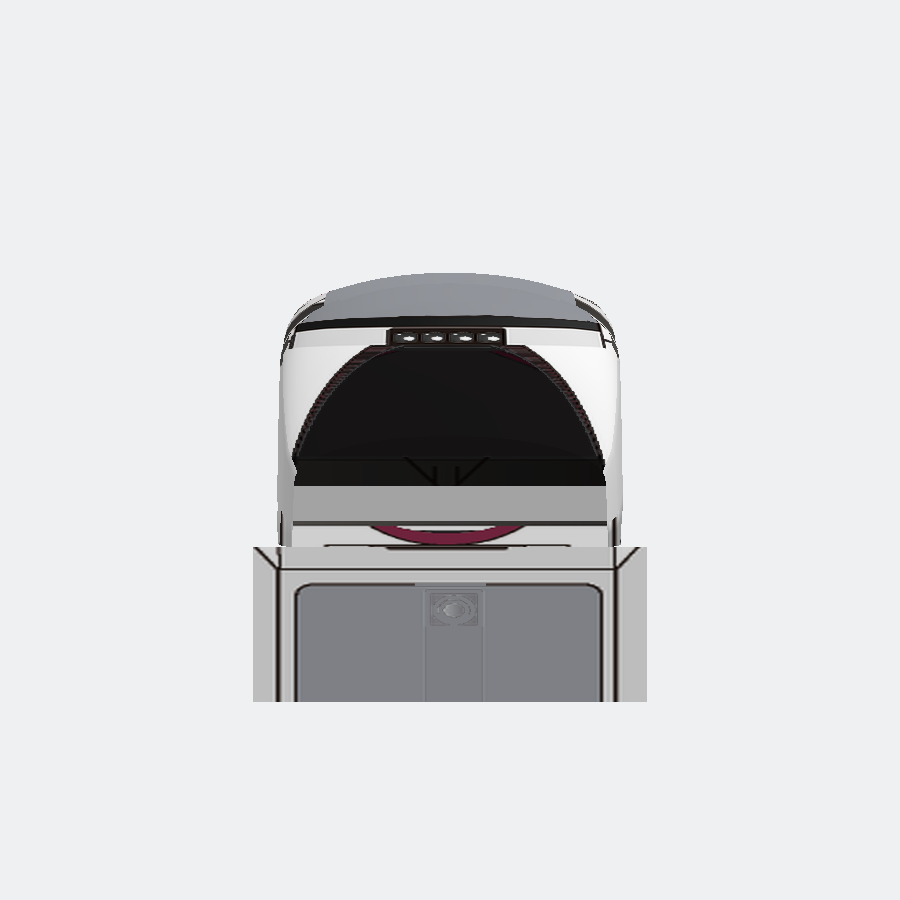
#66 汇总页 #66 · 第一批 #197 jr-west-105
✅ live 合规
✅ live 合规、无新 commit 末触
c44fe0a（末触，models-pipeline）MC 返工原因：胶耳未清
原始理由：贴图颠倒
根因：live 确有耳：司机面＋连挂端两侧，黄色梯形耳通高带折线；第四轮填了平色常数 (228,182,70)，把蓝腰带涂成平黄——正是 MC 点名的纯色块；前几轮只测白色，漏掉了与车身同色的耳。
司机端返工（2026-11-28）：未返工——live 合规。黄耳已清（侧带白像素 0）；蓝腰带已恢复 (44,98,145)，与图纸蓝吻合。
像素证据：live == R5 tex_fixed，0 像素差异；图纸用福塩線黄涂装（另三张已排除）。
⚠️ 遗留：脸 vs 图纸 NCC 仅 0.30（R4 重建所致），布局／颜色／要素全对，无六类缺陷；像素级重裁须另派。
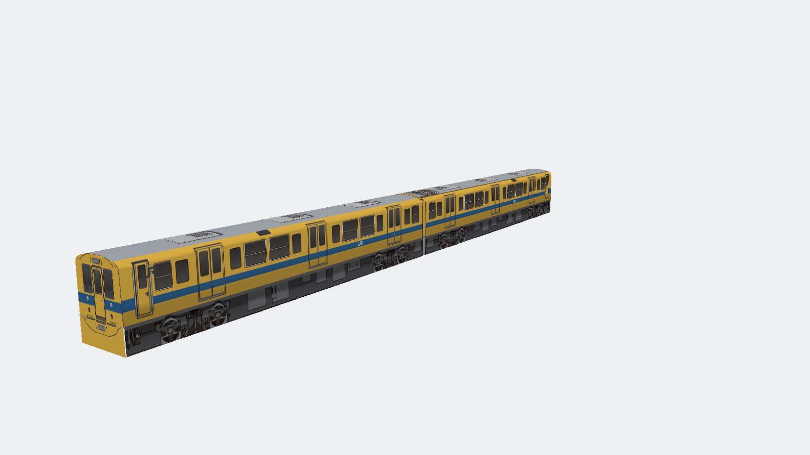
图加载失败现状图（live 合规，未返工）——斜视角
🔍 司机端端面（live）
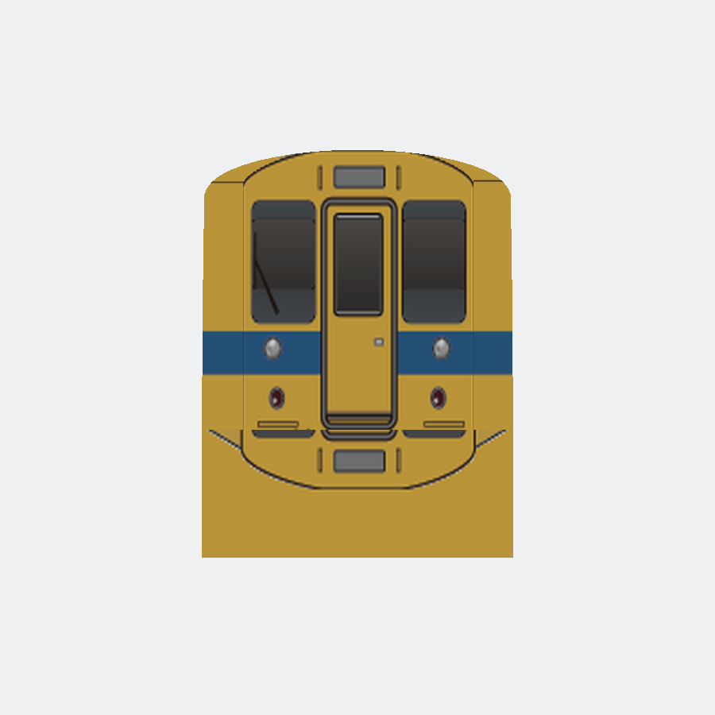
#72 汇总页 #72 · 第一批 #223 jr-west-kiha127
✅ live 合规
✅ live 合规、无新 commit
MC 返工原因：胶耳未清
原始理由：贴图颠倒
根因：live 确有耳（司机面＋裙板两处）：R4 翻转修法在 live，但胶耳是另一处残留缺陷，不是翻转问题。
司机端返工（2026-11-28）：未返工——live 合规。R5“耳区白像素 20555→0”已证实；裙板镜像延展精确。
像素证据：front／end1 边缘带白像素 0/0、接缝 median 0；裙板镜像差 median 0、p90 0、max 0.0。
⚠️ 脸 vs 图纸 NCC 仅 0.39（复合贴图干扰），但脸部全部特征均为图纸内容，方向已按实车照片核实。
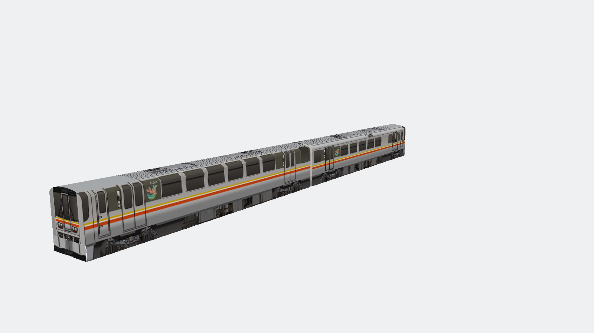
图加载失败现状图（live 合规，未返工）——斜视角
🔍 司机端端面（live）
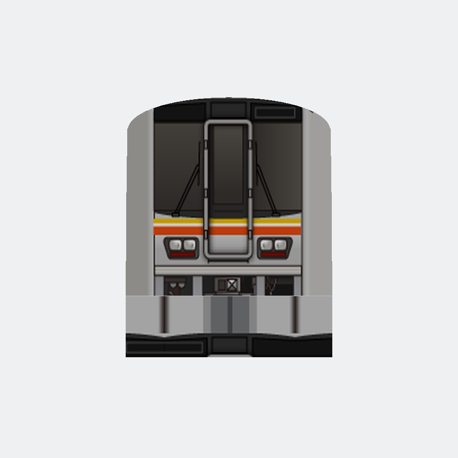
#74 汇总页 #74 · 第一批 #234 keihan-700
✅ 已推
✅ 已推 提交
a7a2f80（car1＋car2，models-pipeline）MC 返工原因：胶耳未清
根因：live 确有耳：司机面＋连挂端两侧，深绿梯形耳通高；第四轮把玻璃色误传到侧带，只修裙板、“脸干净”是亮度判据失明。
司机端返工（2026-11-28）：front 底行 rows 349–351 边缘带白像素逐列延展（各列最近干净行 row 348 带色填充，L 186／R 118）。
像素证据：350 px；修后带区白像素（≥230）0；car1 与 car2 front 贴图逐字节相同、一次修复两 GLB 同换。
⚠️ 面内 rows 343–351 白矩形为原始建模内容（图纸脸件顶带位置），不动。
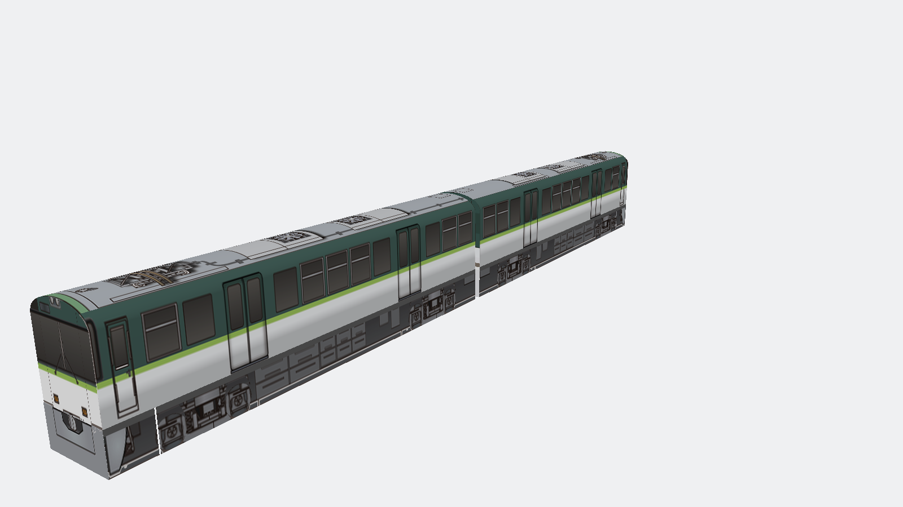
图加载失败修后——斜视角
🔍 司机端端面
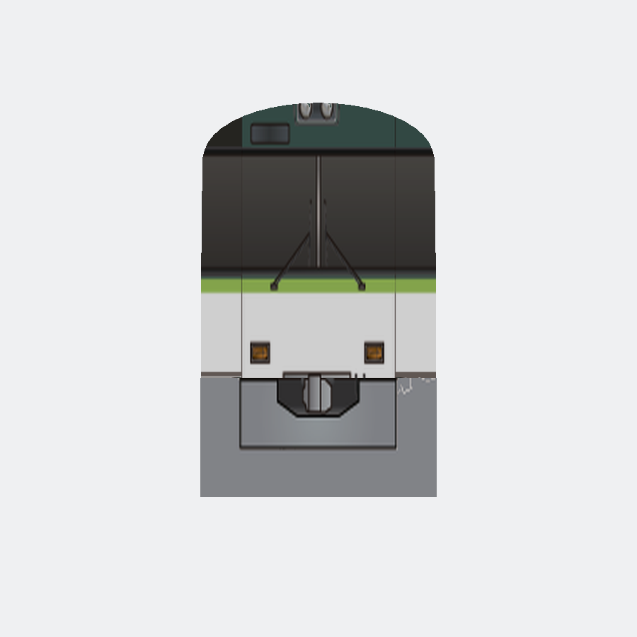
#75 汇总页 #75 · 第一批 #238 keihan-8000
✅ 已推
✅ 已推 提交
316267c（car1＋car3，models-pipeline）MC 返工原因：胶耳未清
原始理由：贴图颠倒
根因：live 确有耳（两端司机面各一处）：第四轮修法在 live，但两端修法互换过（鸽徽渲染在脸宽 0.422，实车 8051 应为 0.57），胶耳是另一处残留。
司机端返工（2026-11-28）：裙板底部 rows 537–569 白纸逐列延展（各列 rows 510–528 裙板灰中值 155 填充，竖纹保留）。
像素证据：12,641 px／辆；修后 rows 537–569 白像素（≥230）0；car1 front＋skirt_front、car3 front＋skirt_end1_f 共 4 图项同换。
⚠️ R5“y=550 整行白是裙板底缘以下的纸、不在面内”是错的（UV 证实裙板底约 0.16 m 为纯白纸）。鸽徽位置偏＋缺雨刮是原图纸问题，未动。
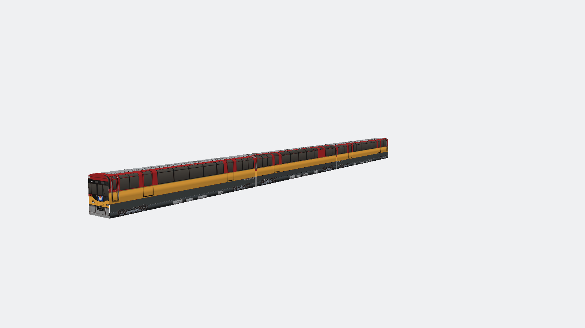
图加载失败修后——斜视角
🔍 司机端端面
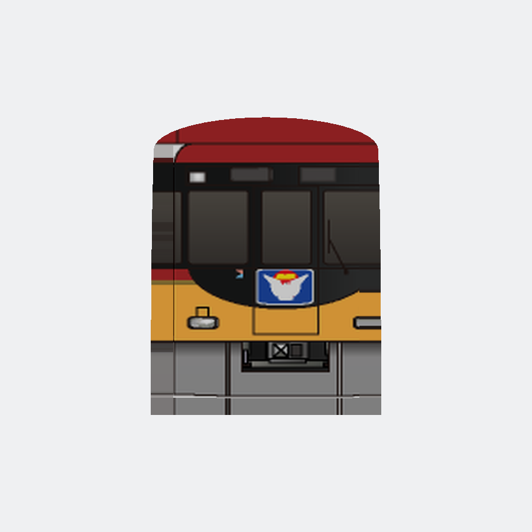
#79 汇总页 #79 · 第一批 #246 keio-1000
✅ 已推
✅ 已推 提交
cf1bd39（car1，车号 1757→1707，models-pipeline）MC 返工原因：其他：你把它变形挤压到那个上面干什么怎么可能 人家图纸上的图不够贴的不然怎么做成模型
原始理由：贴图颠倒
根因：司机面贴图被变形／挤压贴到前盖上：前盖贴图是图纸脸片整片 2.98 倍均匀缩放＋154 行制作者补的纯色 aqua 垫底，横向 135.6 px/m、纵向 207 px/m，纵横比失真 1.53 倍（脸被纵向压扁）；图纸脸片本身倒着印，制作者转了 180° 却把整片（含车钩盒）都贴上前盖——车钩盒落在脸中部；前盖底部 0.72 m 是纯色 aqua 垫底；前盖以下（y<0.84）是黑带（无裙板，dark 底盘外露）。
司机端返工（2026-11-28）：车号由 1757 改为 1707（同字体／同色／同框重绘第 3 位数字；旧 cap 银带恢复底色）。
像素证据：仅改 363 px；KEIO 0 px 差异；GLB 模型检查与 live 完全相同（8,818 tris，0/0/0）。
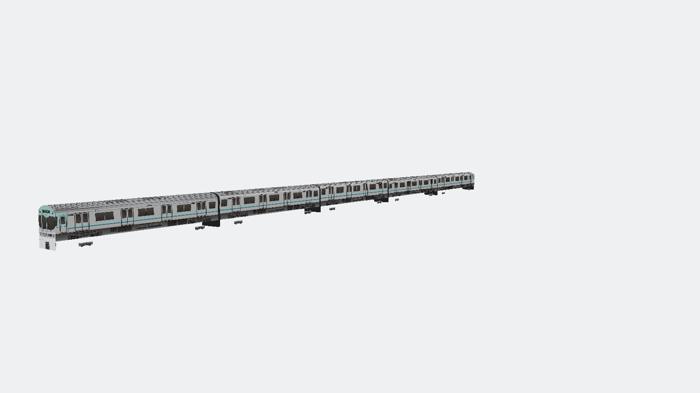
图加载失败修后——斜视角
🔍 司机端端面
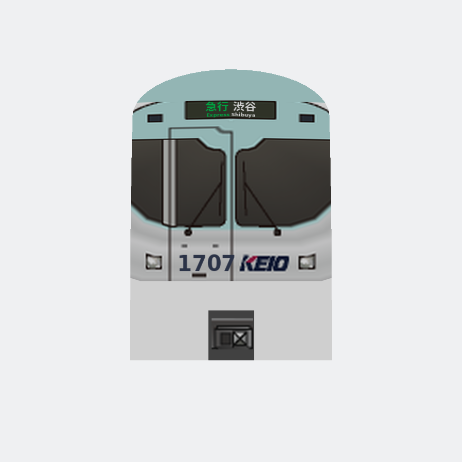
#85 汇总页 #85 · 第一批 #259 kintetsu-1220
✅ 已推
✅ 已推 提交
1e38137（car1，models-pipeline）MC 返工原因：胶耳未清
原始理由：贴图颠倒
根因：live 确有耳（顶角＋底角白纸）：第四轮修法在 live；脸正确（行先绿左、1223 右上、右雨刮均与实车 1321 一致），错在司机端裙板白围裙＋纸模梯形折线。
司机端返工（2026-11-28）：car1 脸底 rows 385–401 白纸逐列延展（各列最近干净行颜色填充：中心底缘浅灰带 197、两缘 213/225）。
像素证据：3,477 px；修后 rows 385–401 白像素（≥230）0；只改 car1 front 一张贴图；旧绛红竖纹已查无残留。
⚠️ 存疑未动：car2_end1 底部带区浅灰 (225,221,220) vs 中部深色（贯通端、编组内隐藏）。
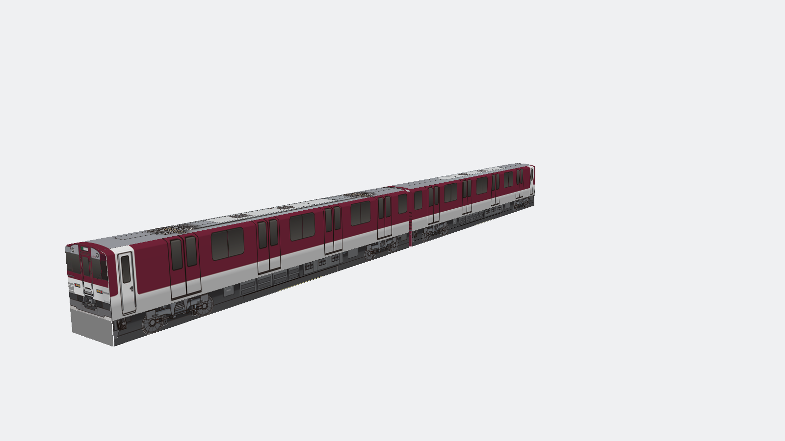
图加载失败修后——斜视角
🔍 司机端端面
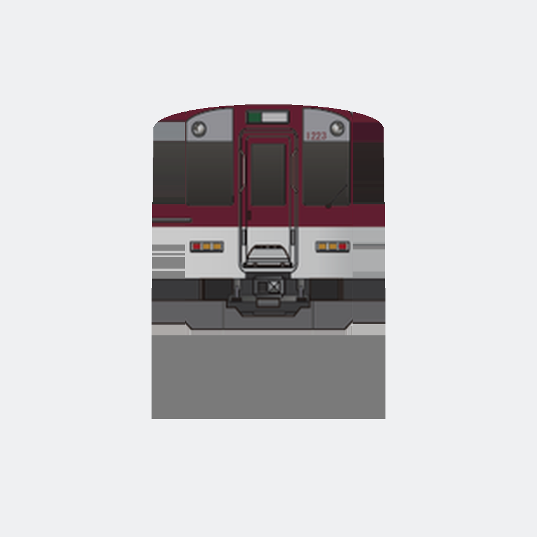
#90 汇总页 #90 · 第一批 #271 kintetsu-22600
✅ 已推
✅ 已推 提交
a0a78a8（car1，models-pipeline）MC 返工原因：胶耳未清
原始理由：贴图颠倒
根因：live 司机面确实有耳（白锯齿纸条，两侧各三处＋底角），不是旧页图；R4 只修了司机端裙板白围裙，未动司机面贴图。
司机端返工（2026-11-28）：脸两带按逐行邻接面色重填（R5 v7 玻璃行填橙 (238,149,84) 是错的，邻接面是深玻璃 63–87／黑带 25–69）；裙板白角逐行向内延展最近非白像素。
像素证据：脸 33,924 px、裙板 4,553 px；修后白像素 0；风挡现占渲染脸宽 ~97%（图纸 97.2%，修前仅 73.4%）。
⚠️ 遗留：脸底黑带＋车钩盒与裙板车钩盒上下叠加（双车钩盒），须 MC 定夺，不属本次。
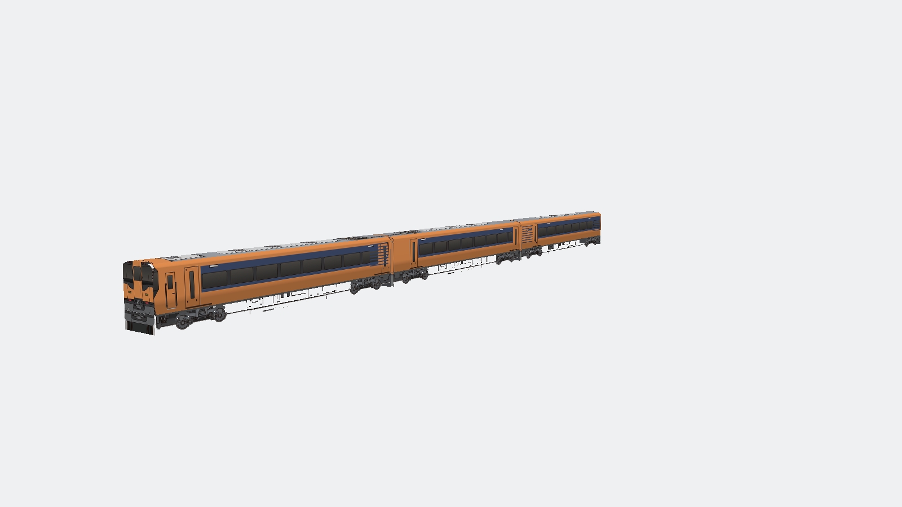
图加载失败修后——斜视角
🔍 司机端端面
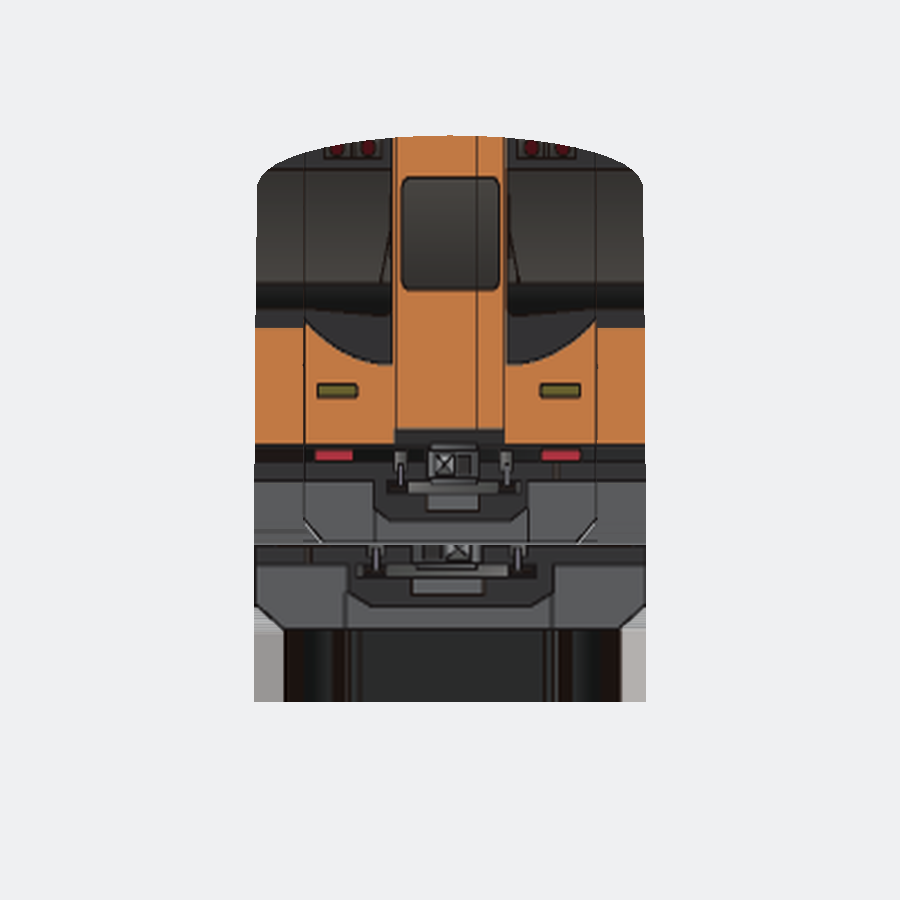
#95 汇总页 #95 · 第一批 #280 kintetsu-5800
✅ 已推
✅ 已推 提交
fee64c5（car1＋car4，models-pipeline）MC 返工原因：胶耳未清
原始理由：贴图颠倒
根因：live 两司机面确实有耳（顶肩白楔＋底角白三角），不是旧页图；R4 只修了裙板白围裙，司机面贴图未动。
司机端返工（2026-11-28）：顶角白楔 4,171 px 按行内邻接品红延展、底行白点 593 px 按行内邻接灰延展（未用单色块）。
像素证据：共改 4,764 px；修后残留填块 0 px、白点 0 px；黑灯带完整保留。
图加载失败
'">修后——斜视角
🔍 司机端端面
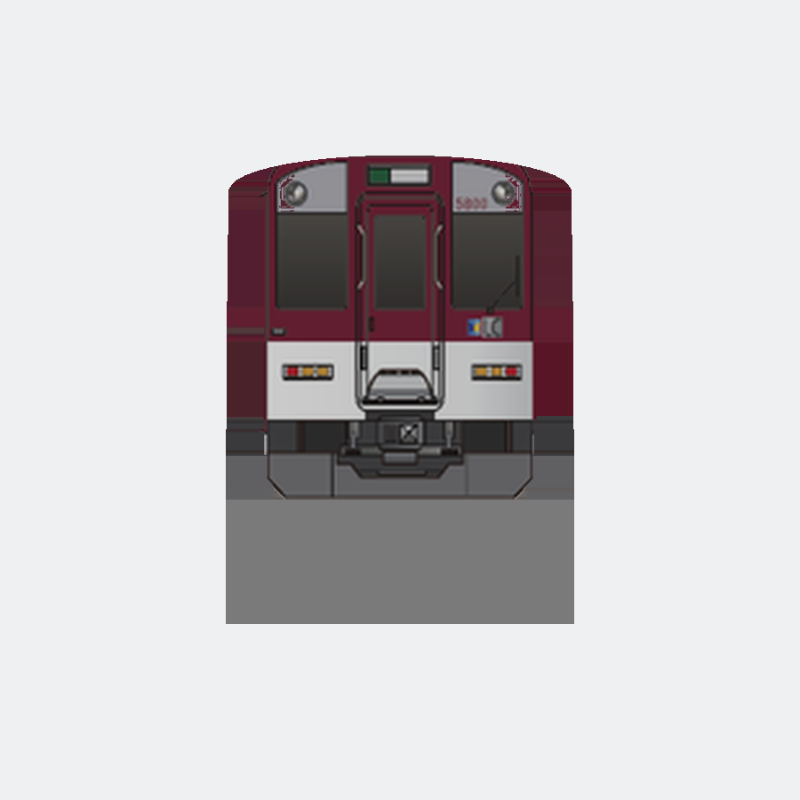
#108 汇总页 #108 · 第一批 #325 matuura-mr600
✅ 已推
✅ 已推 提交
01f1ce0（car1，方案 A 图纸原样，models-pipeline）MC 返工原因：其他：司机室的贴图重新截 重新贴
原始理由：贴图颠倒
根因：图纸风挡画得比实车高约 0.5 m，脸下部被压缩，MR 标志落在脸面最底缘（实车 y~1.71–2.01，模型 y~1.19–1.34）；MR 标志压在深色玻璃上（右窗深色下部延伸进白带区）。
司机端返工（2026-11-28）：方案 A 图纸原样贴、不拉伸——脸件轮廓 (534–662, 1490–1640) 均匀缩放 s=2.7907 至 360×421，纵横比仅 0.09% 取整差。
像素证据：定稿与图纸 NCC=1.0；风挡回图纸高度（灰部 y2.34–3.32）、MR 标志回原位 y2.18–2.28、右窗斜楔已清。
⚠️ 底带（灰＋蓝）未贴上脸（防双蓝带，逐列白脸邻接延展）；实车偏差：风挡顶约 +0.32 m（整体上移约 0.3 m，方案 A 已知代价）。
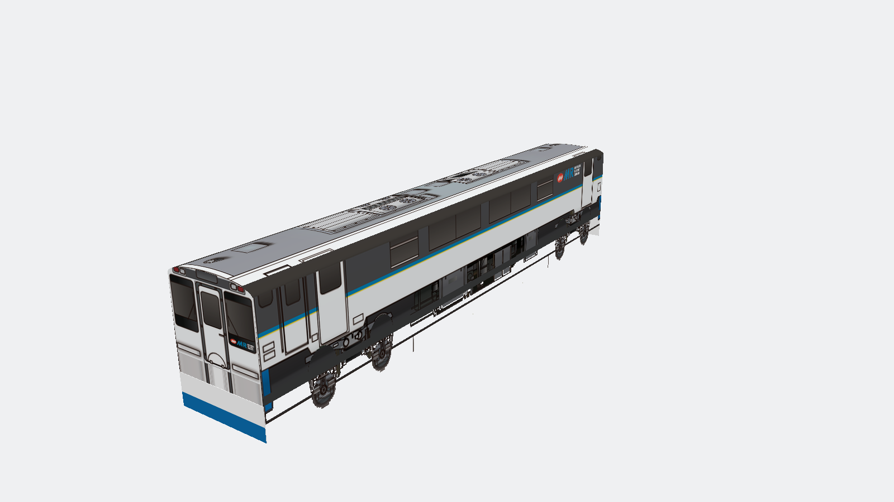
图加载失败修后——斜视角
🔍 司机端端面
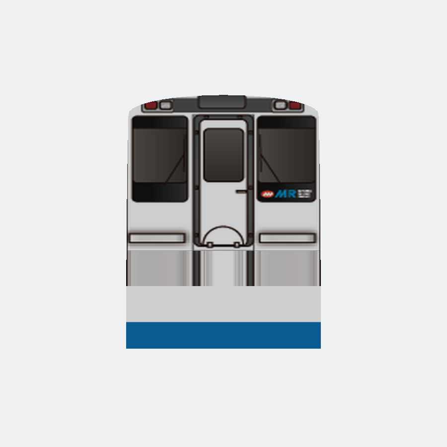
#123 汇总页 #123 · 第一批 #355 nagoyasub-2000
✅ live 合规
✅ live 合规、无新 commit
MC 返工原因：其他：补编组
原始理由：其他：头型く
根因：编组不全：实车 6 辆固定编组，模型 2 辆，缺 4 辆。
司机端返工（2026-11-28）：未返工——live 合规。car6 翻转几何＋贴图均正确，6 辆完整。
像素证据：脸 vflip 精修窗口 NCC 0.9429（长宽比偏差 0.3%，分带 0.88–0.99），直接裁切。
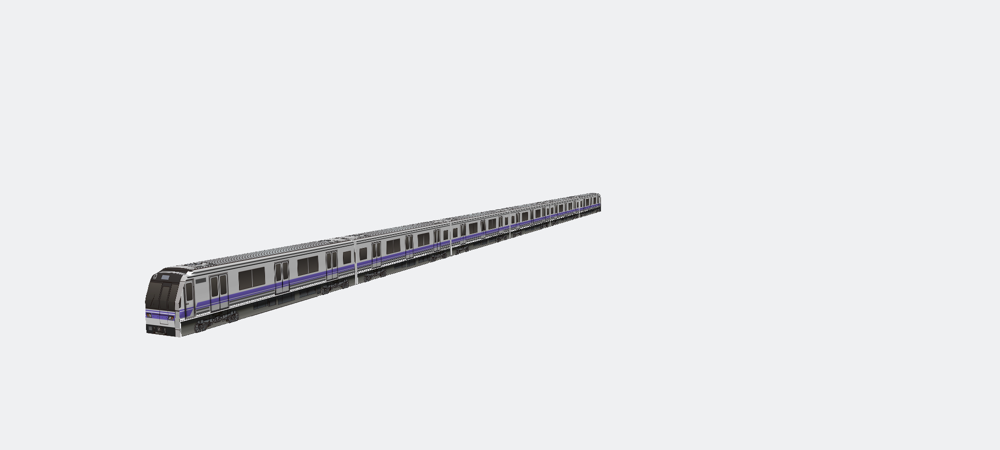
图加载失败现状图（live 合规，未返工）——斜视角
🔍 司机端端面（live）
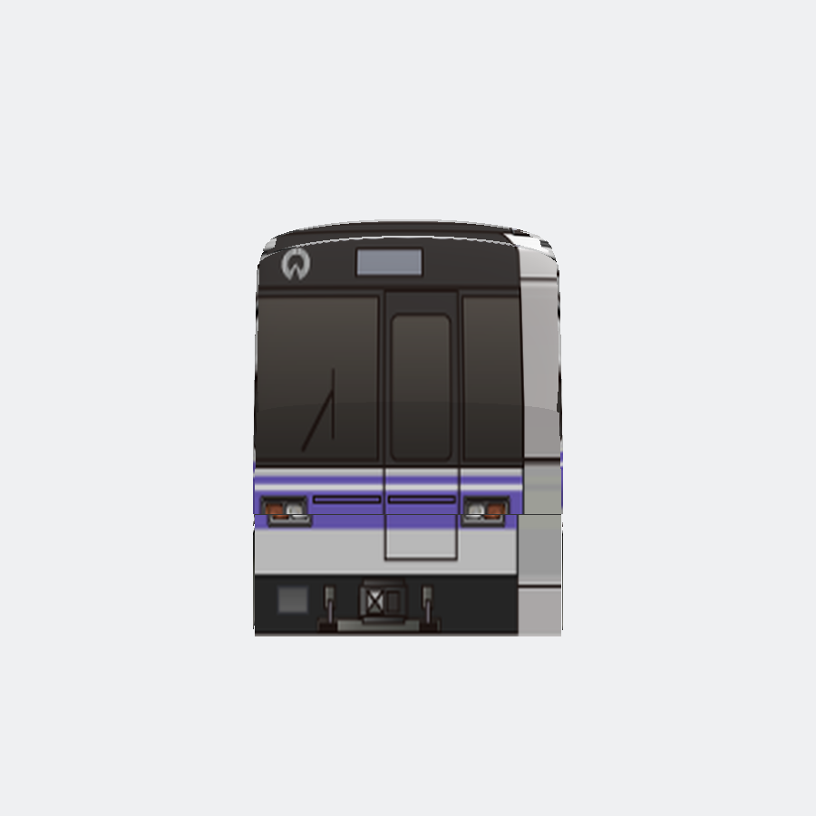
#124 汇总页 #124 · 第一批 #357 nagoyasub-7000
✅ live 合规
✅ live 合规、无新 commit
MC 返工原因：胶耳未清
原始理由：其他：く
根因：live 两司机面确实有耳——且是体色耳（非白耳：左侧灰绿、右侧深绿／深灰），另司机端裙板底角有白三角；白耳指标测不出（体色耳与车身同色）。
司机端返工（2026-11-28）：未返工——复诊合规。R5 v7 填充干净。
像素证据：R5 报告“最差行差 ~150”为口径假象，本次已推翻。
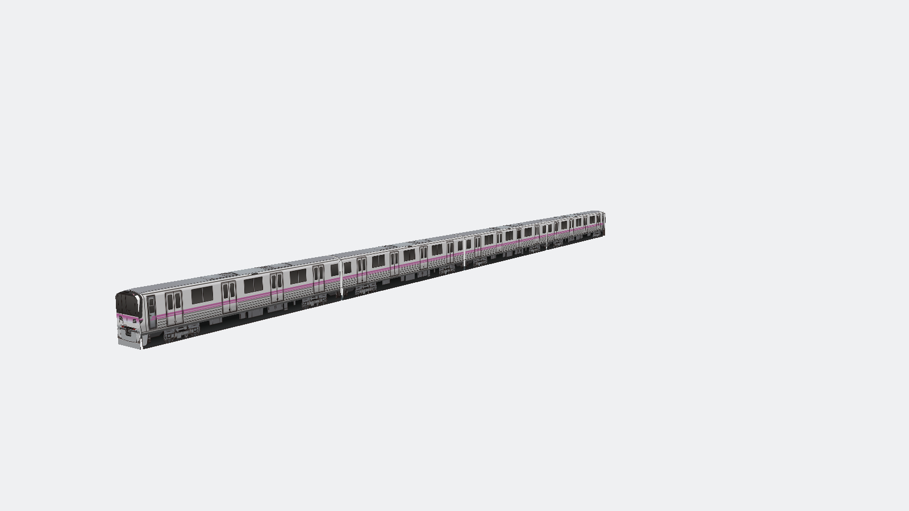
图加载失败现状图（live 合规，未返工）——斜视角
🔍 司机端端面（live）
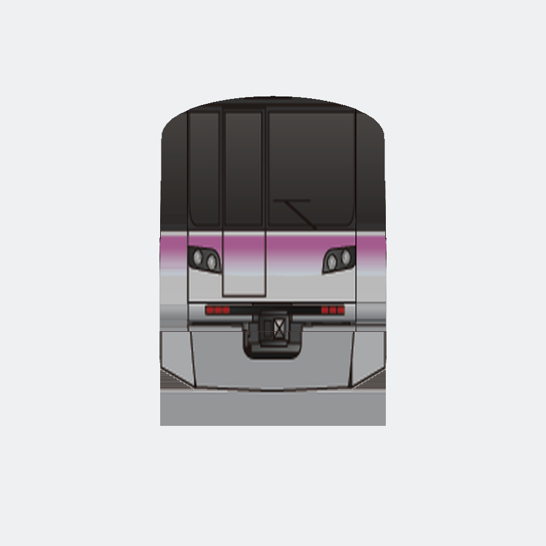
#132 汇总页 #132 · 第一批 #374 nipporitoneri-330
✅ 已推
✅ 已推 提交
45ff6e9（car1＋car2，models-pipeline）MC 返工原因：其他：司机室的图不行你给人家浓缩这么小干嘛
原始理由：贴图颠倒
根因：R4 逐行填充把风挡两侧填成黑色，风挡读起来仍是 62% 灰玻璃＋两侧黑板——看起来被“浓缩”了；X 盒（联挂器）位置错，在脸纹理 y1.39–1.57，约高出 1 m；裙板黑得太多（上 37% 浅灰＋下 63% 纯黑，实车保险杠只占底部约 36%）。
司机端返工（2026-11-28）：整脸图纸重建——TL 脸件旋转 180°、均匀重缩 7.697×（1347×1239），玻璃恢复图纸原图（分片亮度＋白立柱＋雨刮）；X 盒改从修前脸裁（260×80）均匀放大至 371×114 贴回裙板黑保险杠中央。
像素证据：楔形＋5 灯＋银杏＋条纹均为图纸像素（NCC 0.8392）；R5“按每行亮度填玻璃带”是程序填色、“X 盒重着为保险杠黑”是重绘改色，均已纠正。
⚠️ 裙板 UV 各向异性（横 400 px/m、纵 537 px/m），X 盒纵横比保持优先于物理高度；若要精确物理高度须重推裙板 UV，另派。
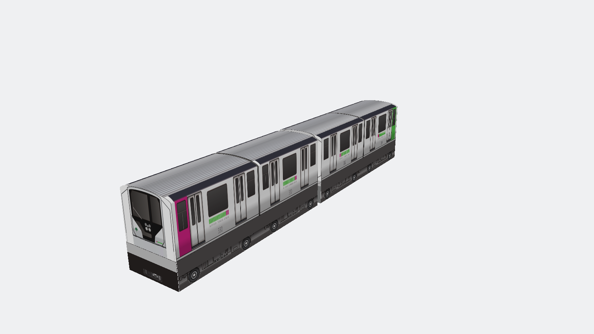
图加载失败修后——斜视角
🔍 司机端端面
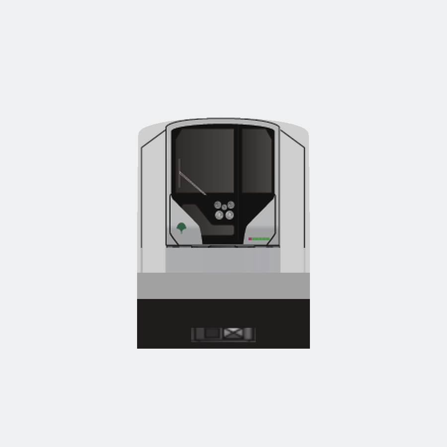
#159 汇总页 #159 · 第二批 #435 sendai-sub-3000
✅ 已推
✅ 已推 提交
7069f54（car1＋car4（详见 G4 报告），models-pipeline）MC 返工原因：胶耳未清
原始理由：其他：小く并且还要检查编组齐了没
根因：live 两司机面确实有耳（中部白梯形＋底角白矩形），不是旧页图；R4 声称“无白条”是错的——耳是梯形／矩形，不是竖条。另司机端裙板顶角有白矩形。
司机端返工（2026-11-28）：827 px 按修前图纸像素原样恢复（仅限 live 为 v7 平白 [234]±6 且修前 <200 的像素）。
像素证据：修后 y358 各列均为 [118,107,103]、y360 为 [91,78,72]/[88,75,70]；残留 0 px。
⚠️ 3100 车顶错弓描边未动（定夺未决）；29 个内翻三角未动几何。
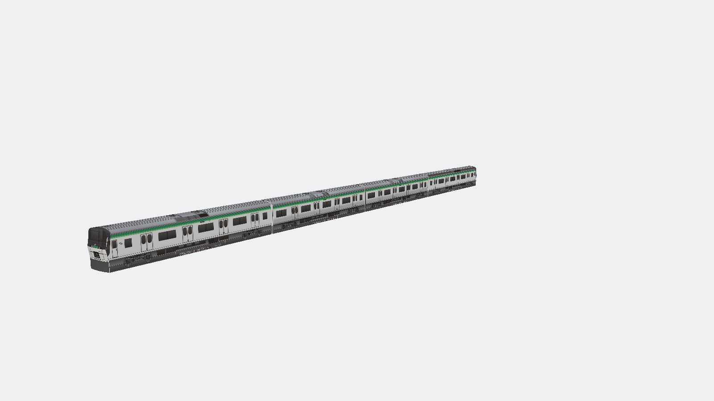
图加载失败修后——斜视角
🔍 司机端端面
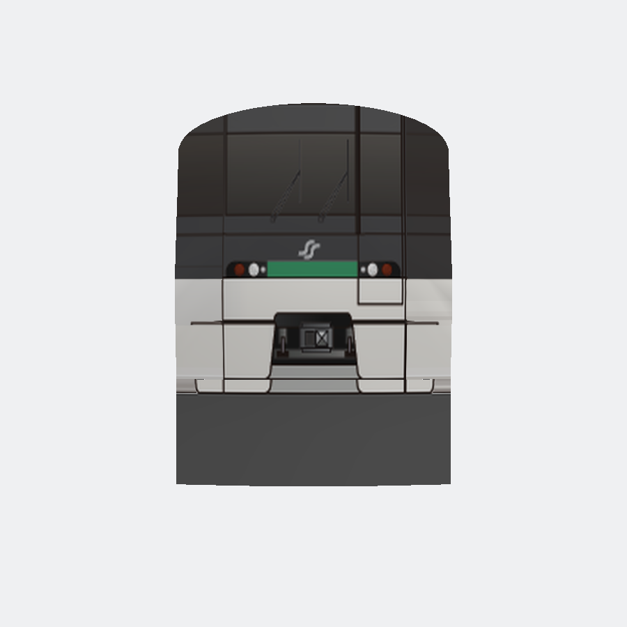
#180 汇总页 #180 · 第二批 #473 tokyometro-05
✅ 已推
✅ 已推 提交
1edc2ee（car1＋car3，models-pipeline）MC 返工原因：其他：你把车钩贴人家脑门上干嘛？哪有车钩在上面的车钩给它移到下面来呀。
原始理由：其他：く
根因：前脸贴图顶部有一块灰板（行 11–87，x 38–460）：中央是柴田式车钩头、右侧有梯子、左侧有小方盒，UV 落在 y≈3.5–3.96——正贴在脑门上。灰板是纸模图纸司机面片顶部的车钩组件翻折片，制作者把整片直接映射到前脸，车钩就上了脑门。实车脑门是素面不锈钢，车钩在底部中央、裙板黑色开口内。
司机端返工（2026-11-28）：风挡颠倒纠正——玻璃块 cols 37–425、rows 150–395 原地 rot180，行先椭圆到顶；裙板车钩头换翻折片真头紧裁 (99,33,142,72) → 62×56，居裙板开口中心。
像素证据：角部外 94,742 像素往返翻转逐像素相等；新头 vs 翻折片头 NCC 1.0；实车照片证实行先在风挡顶部、头灯在下方蓝带。
⚠️ 顶行 rows 0–96 面白填色（渲染不可见）未动，已定接受现状。
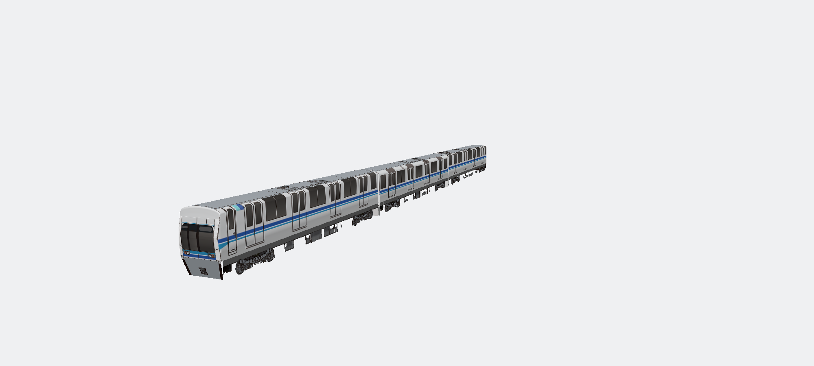
图加载失败修后——斜视角
🔍 司机端端面
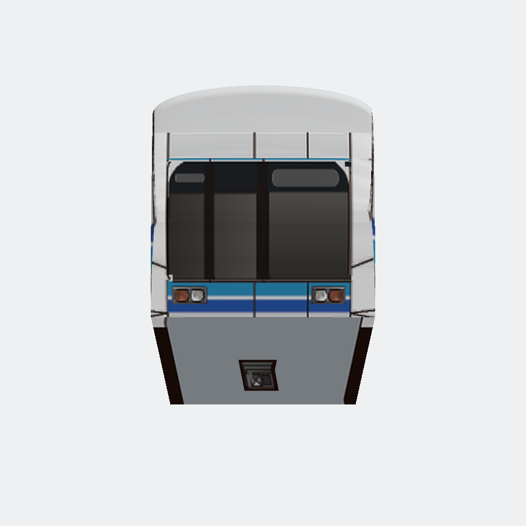
#201 汇总页 #201 · 第二批 #520 yokohamasub-10000
✅ 已推
✅ 已推 提交
31c88da（car1＋car3，models-pipeline）MC 返工原因：头型く
原始理由：贴图颠倒
根因：R4 只做了整图翻转＋UV vmax→1.0，几何鼻型从未动过：实测 live car1/car3 侧面轮廓顶部恒定、底部恒定、半宽恒定，前脸扁平垂直面——完美长方体盒子，屋顶线水平到端面再直角下折（不是胶耳，胶耳第四轮已修）。
司机端返工（2026-11-28）：唯一缺陷左上灰块 (160,165,171)（侧网灰漏进脸角）用脸件窗口右下角裁切 patch（60×40）修补；最顶行 1 行侧网灰按同行邻接顶缘色清理（41→4 px）。
像素证据：脸为真裁切（NCC 0.9206）；整脸 NCC 0.9206→0.9288；左缘已查无胶耳。
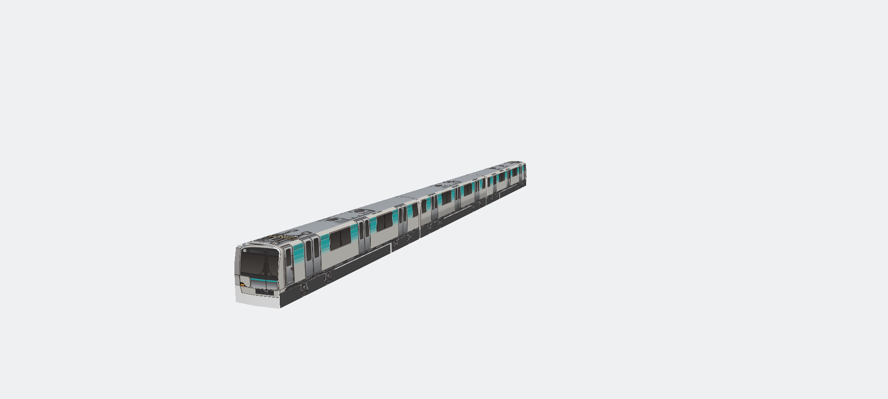
图加载失败修后——斜视角
🔍 司机端端面
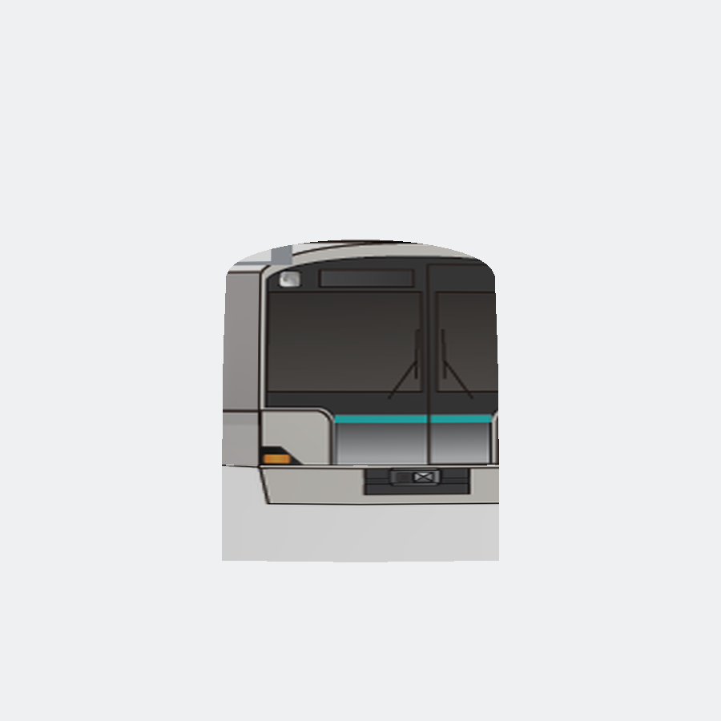